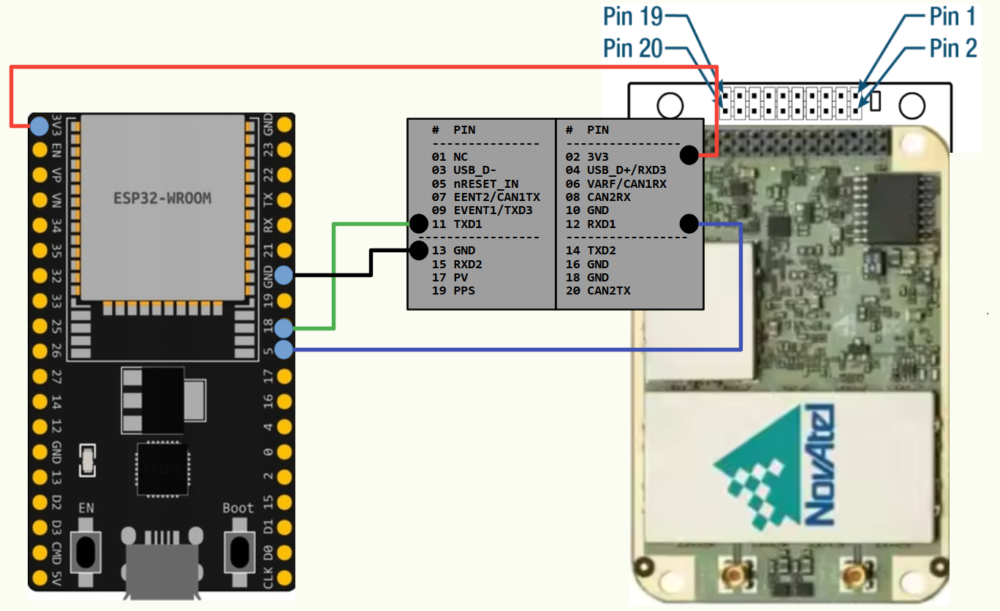

|
oem7heading
Library for obtaining heading and positionfrom NovAtel OEM7 GNSS dual-antenna receiver by ESP32, Arduino or PC via serial port
|
Library for obtaining heading and positionfrom NovAtel OEM7 GNSS dual-antenna receiver by ESP32, Arduino or PC via serial port
See: OEM7 Receiver User Documentation
Tested on OEM718D connected via UART to ESP WROOM-32U
Tested on OEM718D connected via Serial to Win32
| ESP32 PIN | OEM718D PIN |
|---|---|
| 3V3 | 3V3 |
| GND | GND |
| 18 | 11 TXD1 |
| 5 | 12 RXD1 |

To output debug logs by Arduino or ESP32, declare macro DEBUGLOG in platforio.ini and rebuild sketch
To output debug logs by Win32 or POSIX, declare macro DEBUGLOG in compiller options or MS VS projects properties
For Win32 or POSIX platform need use Serialib